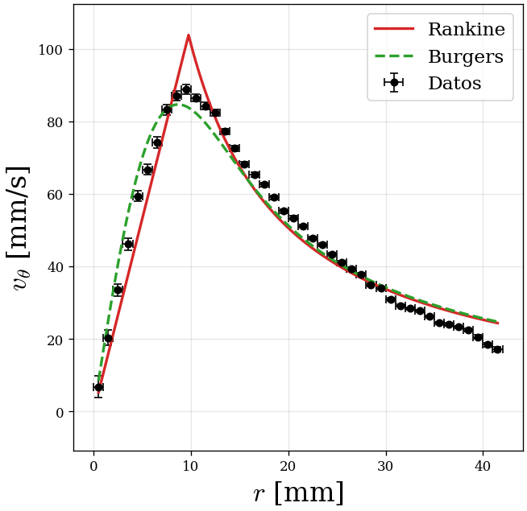
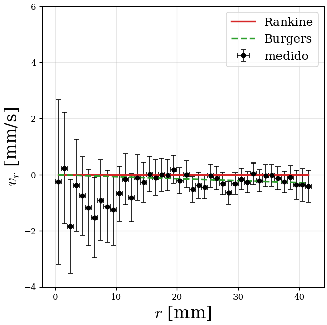
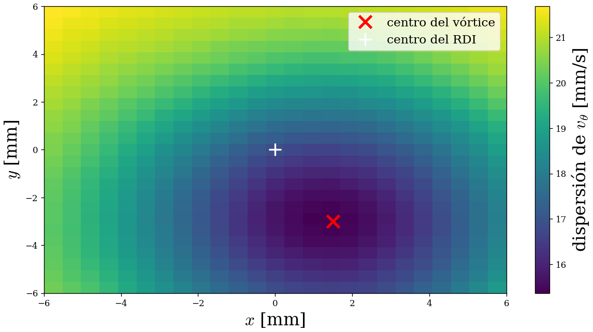
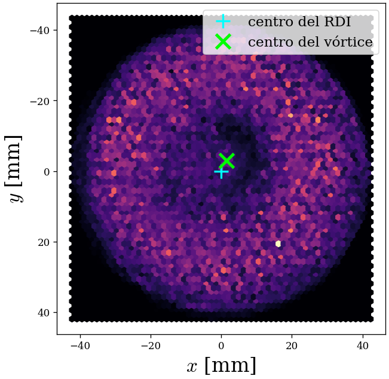

Detección de partículas y medición del campo de velocidades
1. Idea central
El programa no sigue partículas con identidad. Lo que hace es:
- Detectar todas las manchas amarillas de glitter en cada cuadro.
- Emparejar cada detección del cuadro \(f\) con la más parecida del cuadro \(f+1\).
- Usar esos pares —llamados vínculos— para calcular velocidades.
No importa “quién es quién”: importa dónde y cuánto se movió el fluido en esa zona. Como el vórtice es estacionario, suave y axisimétrico, los vínculos muestrean bien el campo aunque el emparejamiento cambie de partícula física entre cuadros.
La idea conceptual es la misma que la de PIV (Particle Image Velocimetry): sembrar el fluido con trazadores y medir desplazamientos locales. Técnicamente, esta versión es más bien PTV sin identidad (detección de partículas + emparejamiento puntual), no PIV clásico por correlación de ventanas.
| Tracker tradicional | Este programa | |
|---|---|---|
| Objetos simultáneos | Pocos, todos distinguibles | 80–120 manchas parecidas |
| Identidad | Cada partícula tiene un ID persistente | No existe ID |
| Trayectoria | Larga, de punta a punta | Par de cuadros consecutivos |
| Modelo de movimiento | Se predice la posición | Solo “el más cercano” |
| Qué mide | Historia de cada partícula | El campo de velocidades |
2. Relación con PIV y PTV
La idea conceptual es la misma que la de PIV (Particle Image Velocimetry): sembrar el fluido con trazadores y medir desplazamientos locales. La diferencia es cómo se obtiene el desplazamiento:
| PIV clásico | Este programa | |
|---|---|---|
| Cómo mide | Correlación de ventanas entre dos imágenes | Detección de blobs + vecino mutuo punto a punto |
| Identidad | No hay IDs; se mide un campo promedio por ventana | No hay IDs; cada par de cuadros aporta un vector |
| Trazadores | Alta densidad, tamaño controlado | Muchas partículas chiquitas e indistinguibles |
| Qué se obtiene | Campo de velocidades por ventana | Campo de velocidades por vínculo |
Técnicamente, esta versión es PTV sin identidad: detección de partículas y emparejamiento puntual, sin trayectorias largas. No usa Trackpy, OpenPIV ni asignación Húngara. El detector usa OpenCV, NumPy y pandas, y un emparejamiento propio por vecino mutuo.
3. Detección cuadro a cuadro
El archivo principal es detectar_glitter.py.
El pipeline es el siguiente.
3.1. Lectura y escala
El video se lee con OpenCV. Por defecto se procesa a mitad de escala
(--scale 0.5) para ganar velocidad; luego las coordenadas se devuelven
a píxeles del cuadro original.
3.2. Fondo temporal
Se muestrean unos 40 cuadros repartidos en todo el video y se calcula, píxel por píxel, la mediana:
Como el glitter se mueve, casi nunca está en el mismo píxel; la mediana lo borra.
Lo estático —mesa, vidrio, reflejos fijos— sobrevive. Está implementado en
construir_fondo, detectar_glitter.py:104.
3.3. Filtro de color
En vez de usar la imagen a color completa, se calcula un valor por píxel que mide “cuán amarillo” es:
Para el glitter amarillo da alto; para algo blanco o gris da casi 0; para algo
azulado da negativo. Está en filtro,
detectar_glitter.py:72, y el caso
yellow en la línea 85.
Hay otros filtros: green, red, blue,
magenta, greenx2, white, maxc,
sat, gray. Con --filtro auto se prueban varios
sobre cuadros de muestra y se elige el que da más detecciones medianas dentro del ROI
(elegir_filtro_auto, línea 260).
--filtro auto elige el filtro que da más
detecciones medianas dentro del ROI, no el que produce el mejor ajuste. Para un
video ya caracterizado conviene fijar el filtro a mano (por ejemplo,
--filtro yellow o --filtro magenta).
3.4. Resta de fondo
Se aplica el mismo filtro al cuadro y al fondo, y se resta:
Lo que aparece brillante en \(diff\) es lo que se movió o apareció respecto del fondo.
3.5. Umbral robusto
No se usa un umbral fijo. Se estima el ruido de la resta con la MAD (Median Absolute Deviation):
Con \(k=6\) por defecto. El factor \(1.4826\) hace que, para ruido gaussiano, la MAD
sea comparable a un desvío estándar. Ventaja: si el video es más ruidoso u oscuro,
el umbral se adapta solo. Está en sigma_mad (línea 143) y
umbral_robusto (línea 149).
3.6. Máscara, morfología y componentes conexas
Se forma la máscara:
Luego:
- apertura con kernel \(2\times2\): elimina píxeles aislados;
- cierre con kernel \(3\times3\): rellena huecos pequeños;
- componentes conexas con conectividad 8
(
cv2.connectedComponentsWithStats).
Cada componente es un blob candidato. Se descartan los que tienen área fuera de:
(a la escala de procesamiento). Ese rango de área es, en la práctica, el criterio
que define “qué es una partícula”. Está en detectar, línea 154.
3.7. Centroide subpíxel
La posición no es el centro de la caja del blob, sino el centroide pesado por intensidad:
Los píxeles más brillantes pesan más. Eso da precisión por debajo del píxel.
También se guarda el pico de intensidad. Las coordenadas se dividen por
--scale para volver al cuadro original.
3.8. ROI y calibración
Las detecciones fuera de la elipse del recipiente se descartan
(dentro_elipse, línea 239). El ROI y la escala salen de un JSON generado
por ajustar_recipiente.py:
La herramienta abre un cuadro o el fondo temporal y permite ajustar a mano un círculo
sobre la zona de diámetro conocido. Guarda
cx, cy, a, b, ang, diam_px, px_per_mm, diametro_mm, diametro_mm_err.
Ver ajustar_recipiente.py:240–264.
Si no se pasa --roi-json, el programa intenta estimar el borde del fluido
automáticamente: traza rayos desde el centro, busca la última transición
oscuro→claro y ajusta una elipse con cv2.fitEllipse
(estimar_roi_fluido, línea 194). También se puede pasar
--px-per-mm directamente.
4. Vínculos y velocidades
Para cada par de cuadros \(f\) y \(f+1\):
- Se calcula la matriz de distancias entre todas las detecciones de \(f\) y todas las de \(f+1\).
- Para cada punto de \(f\) se busca el más cercano en \(f+1\).
- Para cada punto de \(f+1\) se busca el más cercano en \(f\).
- Se conserva el par solo si la elección es recíproca (vecino mutuo) y si la distancia es menor o igual a una compuerta.
Por defecto gate_mm = 2.5 mm. La regla práctica es:
Está implementado en vincular,
detectar_glitter.py:308.
4.1. Velocidad
Para cada vínculo:
También se guarda el punto medio, su radio respecto del centro del ROI y las
componentes en mm/s. Todo esto se escribe en vinculos.csv
(líneas 553–581).
4.2. Video de debug
Opcionalmente se genera un video con:
- círculos verdes en las detecciones;
- flechas verdes desde la posición en \(f\) hasta la posición en \(f+1\);
- factor de exageración
--flecha-ganancia(por defecto 5), porque el desplazamiento real entre cuadros es de pocos píxeles.
Se escribe un cuadro de salida por cada cuadro procesado, para que quede sincronizado con el video original (líneas 446–529).
5. Análisis del campo
El archivo de análisis es analizar_glitter.py.
5.1. Centro del vórtice
No se usa directamente el centro del ROI. Se prueban centros candidatos en una grilla de \(\pm 6\) mm alrededor del centro del ROI, con paso de 0.5 mm. Para cada candidato:
- Se calculan \(r\), \(\theta\), \(v_r\), \(v_\theta\) de todos los vínculos.
- Se agrupan por anillos radiales.
- Se mide la dispersión robusta (MAD) de \(v_\theta\) dentro de cada anillo.
- Se elige el centro que minimiza esa dispersión.
La idea es la coherencia azimutal: si el centro es correcto, todos los
puntos de un mismo radio tienen aproximadamente la misma \(v_\theta\). Ver
dispersion_vt (línea 95) y optimizar_centro (línea 113).
5.2. Componentes polares
Para cada vínculo, respecto del centro \((c_x,c_y)\):
Está en componentes, línea 86.
5.3. Sentido de giro
El eje \(y\) de la imagen apunta hacia abajo. Con esta convención, un \(v_\theta\) crudo negativo corresponde a giro antihorario visto desde la cámara. El programa guarda el sentido como texto y cambia el signo solo para los ajustes (líneas 964–969).
5.4. Recorte de outliers
Dentro de cada bin radial se eliminan los valores que se alejan más de
\(5\cdot\)MAD de la mediana del bin, tanto para \(v_r\) como para
\(v_\theta\). Está en clip_outliers, línea 157.
5.5. Perfil radial
Se divide el radio en bins de 1 mm (--bin-mm 1.0).
En cada bin, con al menos 5 puntos:
- mediana de \(v_\theta\) y de \(v_r\);
- MAD de cada una;
- error estándar \(= \text{MAD}/\sqrt{n}\).
Ese error estadístico se combina en cuadratura con el error de medición:
Ver perfil_radial (línea 137) y agregar_error_medicion
(línea 347).
5.6. Error de posición y de velocidad
Se repite la detección con dos umbrales distintos (\(k=5\) y \(k=7\)) sobre cuadros sueltos. Se emparejan las detecciones con vecino mutuo y se mide el corrimiento de los centroides. Eso da \(\sigma_{\text{pos}}\) en píxeles. Luego:
El \(\sqrt{2}\) aparece porque hay dos mediciones independientes de posición
(cuadro \(f\) y \(f+1\)). Ver sigma_posicion, línea 479.
5.7. Modelos ajustados
| Modelo | \(v_\theta(r)\) | \(v_r(r)\) | Parámetros |
|---|---|---|---|
| Rankine | \(\Omega r\) si \(r\le R\); \(\Omega R^2/r\) si \(r>R\) | \(0\) | \(\Omega\), \(R\), \(v_{max}=\Omega R\) |
| Burgers | \(\dfrac{\Omega R^2}{r}\left(1-e^{-r^2/R^2}\right)\) | \(-\dfrac{2\nu}{R^2}r\) | \(\Omega\), \(R\), \(\nu\); \(K=\Omega R^2\) |
| Radial | — | \(m r\) | \(m\) (diagnóstico) |
Rankine. Se busca \(R\) con una grilla 1D y, para cada \(R\), se
resuelve \(\Omega\) por mínimos cuadrados lineales. Ver fit_rankine,
línea 250.
Burgers. Se busca \(R\) con una grilla 1D y, para cada \(R\), se ajusta linealmente \(K=\Omega R^2\). Luego:
donde \(m\) es la pendiente del ajuste radial \(v_r=mr\). Ver fit_burgers
(línea 271) y fit_radial (línea 315).
5.8. Ajuste ponderado
Todos los ajustes usan pesos:
La búsqueda 1D se hace con una grilla gruesa y refinamientos locales para que el
parámetro no quede cuantizado por la grilla. Ver _optimizar_1d,
línea 227.
5.9. Errores: bootstrap y sistemáticos
- Bootstrap: se perturba cada mediana del perfil con
\(\mathcal{N}(0,\sigma_{\text{bin}})\), se vuelven a ajustar todos los modelos y
se recalculan las cantidades derivadas. Con 300 remuestreos se obtiene la media y
el desvío de cada parámetro (
bootstrap_perfil, línea 433). - Calibración: se reajusta con
px_per_mmescalado por \(1\pm\sigma_D/D\), con \(\sigma_D=0.5\) mm. - Centro: se reajusta con el centro desplazado \(\pm0.25\) mm en cuatro direcciones.
- Binning: se reajusta con un ancho de bin 25 % mayor y 25 % menor.
Las fuentes se combinan en cuadratura:
Ver _combinar_errores, línea 404. El script
validar_errores.py verifica que se
cumplan las relaciones entre parámetros derivados.
5.10. Salidas
perfil.csv: perfil radial por bins;resultados.json: parámetros, bootstrap, errores y metadatos;vtheta_vs_r.png,vr_vs_r.png,centro_vortice.png,densidad_detecciones.png;informe.html: informe autocontenido, con figuras y video embebidos en base64. El video se transcodifica a H.264 conimageio-ffmpegpara que el navegador lo reproduzca.
6. Parámetros que se tocan
| Parámetro | Default | Qué controla |
|---|---|---|
--filtro | yellow | Filtro de color; auto prueba varios. |
--k | 6 | Umbral \(= k\cdot\)MAD. Más alto: detecta menos y más brillante. |
--min-area | 3 px² | Área mínima del blob. |
--max-area | 300 px² | Área máxima; descarta grupos pegados o reflejos. |
--gate-mm | 2.5 mm | Distancia máxima de vínculo. Más grande: permite saltos, pero mete vínculos falsos. |
--scale | 0.5 | Escala de procesamiento. Más alta: más resolución y más lento. |
--bg-frames | 40 | Cuadros para la mediana del fondo. |
--bin-mm | 1.0 | Ancho de los bins radiales del análisis. |
--bootstrap | 300 | Remuestreos para el error de parámetros. |
Comandos típicos del flujo completo
# 1) Calibrar: ajustar un círculo sobre la zona de diámetro conocido y guardar con "s"
python3 ajustar_recipiente.py \
--video ruta/al/video.mp4 --bg \
--diametro-mm 90 \
--salida resultados/ejemplo/recipiente.json
# 2) Detectar todas las partículas + vínculos + video de debug
python3 detectar_glitter.py \
--video ruta/al/video.mp4 \
--roi-json resultados/ejemplo/recipiente.json \
--output resultados/ejemplo/detecciones.csv \
--links resultados/ejemplo/vinculos.csv \
--bg-cache resultados/ejemplo/bg.png \
--debug-video resultados/ejemplo/deteccion.mp4
# 3) Analizar: perfil, modelos, errores, figuras e informe
python3 analizar_glitter.py \
--dir resultados/ejemplo \
--titulo "ejemplo"7. Por qué funciona sin seguir partículas
Porque lo que se mide no es la partícula, sino el campo de velocidades del fluido. El vórtice es:
- estacionario: no cambia en el tiempo;
- suave: partículas vecinas se mueven parecido;
- axisimétrico: la velocidad depende principalmente de \(r\).
Entonces, aunque un vínculo empareje por error dos partículas físicas distintas, el desplazamiento medido en esa zona sigue siendo representativo de la velocidad del fluido allí. Importa dónde y cuánto, no quién.
Con ~85 detecciones por cuadro y ~50 000 vínculos, el campo queda muy bien muestreado.
8. Límites y supuestos
Supuestos que usa
- El flujo es estacionario.
- El campo es suave y axisimétrico.
- El glitter actúa como trazador pasivo.
- La calibración px/mm es conocida.
- El fondo es estático o cambia poco.
Dónde puede fallar
- Centro: más densidad, brillo y partículas solapadas.
- Compuerta demasiado grande: vínculos falsos y flechas largas.
- Movimiento fuera de plano.
- Reflejos y cambios de iluminación.
- Calibración y centro como errores sistemáticos.
9. Párrafo breve para el informe
10. Figuras de ejemplo
Figuras generadas por el pipeline en ejemplos/30_2_5/. Sirven como
ejemplo visual; los valores numéricos dependen del video y de la calibración.




Informe completo de ejemplo: ejemplos/30_2_5/informe.html (autocontenido, con figuras y video embebidos).
11. Referencias para citar
11.1. Referencias que ya están explícitas en el proyecto
Son las únicas que aparecen como bibliografía formal en
docs/analisis_formulas.pdf.
- [1] D. J. Acheson. Elementary Fluid Dynamics. Oxford University Press, 1990. ISBN 0-19-859679-0. → Modelo de Rankine.
- [2] J. M. Burgers. “A mathematical model illustrating the theory of turbulence”. En Advances in Applied Mechanics. Elsevier, 1948. ISBN 978-0-12-374579-8. → Modelo de Burgers.
11.2. Referencias metodológicas sugeridas
No están citadas explícitamente en el repositorio, pero son las referencias estándar si en el informe se mencionan PIV, Trackpy, MAD, bootstrap, etc.
PIV / velocimetría por imágenes- R. J. Adrian. “Particle-imaging techniques for experimental fluid mechanics”. Annual Review of Fluid Mechanics, 23 (1991), 261–304. DOI: 10.1146/annurev.fl.23.010191.001401.
- M. Raffel, C. E. Willert, F. Scarano, C. J. Kähler, S. T. Wereley y J. Kompenhans. Particle Image Velocimetry: A Practical Guide. 3.ª ed., Springer, 2018. ISBN 978-3-319-68851-0.
- C. E. Willert y M. Gharib. “Digital particle image velocimetry”. Experiments in Fluids, 10 (1991), 181–193. DOI: 10.1007/BF00190388.
- J. C. Crocker y D. G. Grier. “Methods of digital video microscopy for colloidal studies”. Journal of Colloid and Interface Science, 179(1) (1996), 298–310. DOI: 10.1006/jcis.1996.0217. → Algoritmo que implementa Trackpy.
- Trackpy: documentación y código, https://soft-matter.github.io/trackpy. → Solo en versiones exploratorias; no en el código final.
- H. W. Kuhn. “The Hungarian method for the assignment problem”. Naval Research Logistics Quarterly, 2(1–2) (1955), 83–97. DOI: 10.1002/nav.3800020109. → Referencia del método de asignación; no se usa en este código.
- P. J. Rousseeuw y C. Croux. “Alternatives to the median absolute deviation”. Journal of the American Statistical Association, 88(424) (1993), 1273–1283. DOI: 10.1080/01621459.1993.10476408. → MAD y factor 1.4826.
- B. Efron. “Bootstrap methods: Another look at the jackknife”. The Annals of Statistics, 7(1) (1979), 1–26. DOI: 10.1214/aos/1176344552. → Bootstrap sobre el perfil radial.
-
G. Farnebäck. “Two-frame motion estimation based on polynomial expansion”.
En Image Analysis (SCIA 2003), LNCS 2749, Springer, 2003, pp. 363–370.
DOI: 10.1007/3-540-45103-X_50.
→
detectar_laser.py, no el detector de glitter.
-
G. Bradski. “The OpenCV Library”. Dr. Dobb’s Journal of Software Tools,
25(11) (2000), 120–125.
→ Video, filtros, morfología, componentes conexas,
fitEllipse,matchTemplate, flujo óptico. - S. van der Walt, S. C. Colbert y G. Varoquaux. “The NumPy array: A structure for efficient numerical computation”. Computing in Science & Engineering, 13(2) (2011), 22–30. DOI: 10.1109/MCSE.2011.37.
- W. McKinney. “Data structures for statistical computing in Python”. Proceedings of the 9th Python in Science Conference (2010), 56–61. DOI: 10.25080/Majora-92bf1922-00a. → pandas.
- J. D. Hunter. “Matplotlib: A 2D graphics environment”. Computing in Science & Engineering, 9(3) (2007), 90–95. DOI: 10.1109/MCSE.2007.55.
- OpenPIV Team. OpenPIV: Open-source Particle Image Velocimetry toolbox. https://openpiv.readthedocs.io. → Solo como antecedente metodológico; no se usa en el código final.
11.3. Referencias internas del repositorio
README.md: pipeline, parámetros, formatos y constantes hardcodeadas.METODOLOGIA.html: ecuaciones, cadena de ajustes y presupuesto de errores.ejemplos/30_2_5/informe.html: ejemplo de informe generado automáticamente.docs/analisis_formulas.pdf: modelos y bibliografía [1]–[2].detectar_glitter.py: detector de partículas + vecino mutuo.analizar_glitter.py: perfil radial, modelos y errores.detectar_laser.py: variante láser con Farnebäck.validar_errores.py: chequeos de consistencia de los resultados.
11.4. Aclaración sobre qué se usa y qué no
En el repositorio, la única bibliografía explícita es la del PDF
docs/analisis_formulas.pdf ([1]–[3]). Las demás son referencias
metodológicas estándar que conviene citar solo si el informe menciona esos
métodos o herramientas.
- El código final no usa Trackpy ni OpenPIV; si se nombran, es como antecedentes metodológicos.
- El código final sí usa OpenCV, NumPy, pandas, matplotlib, MAD, bootstrap y vecino mutuo.
- El código final no usa asignación Húngara ni seguimiento con identidad.
- El código final no usa Otsu; usa umbral \(k\cdot\)MAD.
BibTeX de las referencias explícitas y principales
@book{acheson1990,
author = {Acheson, D. J.},
title = {Elementary Fluid Dynamics},
publisher = {Oxford University Press},
year = {1990},
isbn = {0-19-859679-0}
}
@incollection{burgers1948,
author = {Burgers, J. M.},
title = {A mathematical model illustrating the theory of turbulence},
booktitle = {Advances in Applied Mechanics},
publisher = {Elsevier},
year = {1948},
isbn = {978-0-12-374579-8}
}
@book{drazin2006,
author = {Drazin, P. G. and Riley, N.},
title = {The Navier--Stokes Equations: A Classification of Flows and Exact Solutions},
publisher = {Cambridge University Press},
year = {2006},
isbn = {978-0-521-68162-9}
}
@article{adrian1991,
author = {Adrian, R. J.},
title = {Particle-imaging techniques for experimental fluid mechanics},
journal = {Annual Review of Fluid Mechanics},
volume = {23},
pages = {261--304},
year = {1991},
doi = {10.1146/annurev.fl.23.010191.001401}
}
@article{crocker1996,
author = {Crocker, J. C. and Grier, D. G.},
title = {Methods of digital video microscopy for colloidal studies},
journal = {Journal of Colloid and Interface Science},
volume = {179},
number = {1},
pages = {298--310},
year = {1996},
doi = {10.1006/jcis.1996.0217}
}
@article{rousseeuw1993,
author = {Rousseeuw, P. J. and Croux, C.},
title = {Alternatives to the median absolute deviation},
journal = {Journal of the American Statistical Association},
volume = {88},
number = {424},
pages = {1273--1283},
year = {1993},
doi = {10.1080/01621459.1993.10476408}
}
@article{efron1979,
author = {Efron, B.},
title = {Bootstrap methods: Another look at the jackknife},
journal = {The Annals of Statistics},
volume = {7},
number = {1},
pages = {1--26},
year = {1979},
doi = {10.1214/aos/1176344552}
}